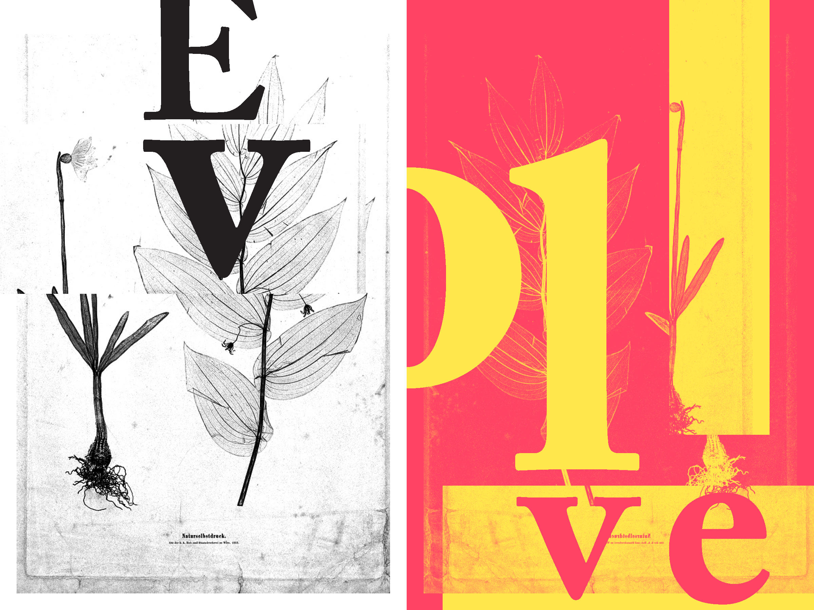
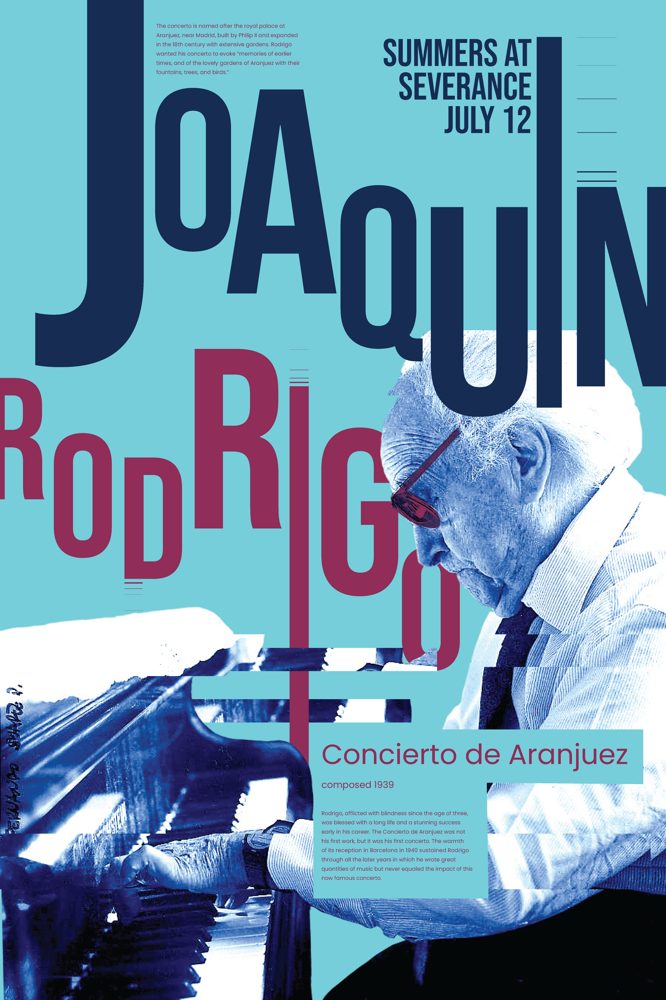
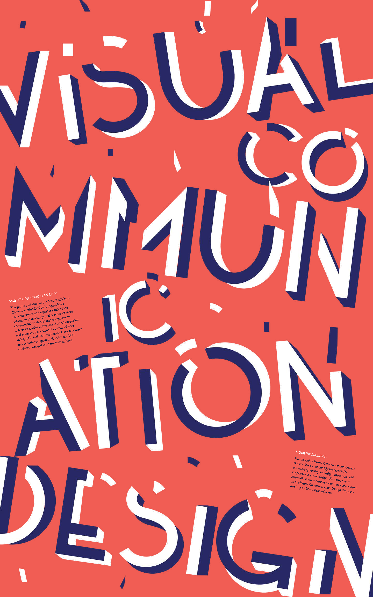

Typography II
VCD 43000
The use of typography (rather than visual imagery) as the primary design form in solving graphic design communication problems. Focused on the development of complicated typographic and photographic systems and layout for both print and screen. Students will explore the relationship of composition, type, grid and image in a creative and meaningful way that advances clarity, concept and narrative. Students will also learn how to utilize robust typographic systems to display complicated sets of data.
Learning Goals
- Demonstrate a more sophisticated integration of typography and image
- Create a complex typographic system
- Understand how these systems relate to user-centered design across media in professional settings
Preferred Experience
- Typography I


